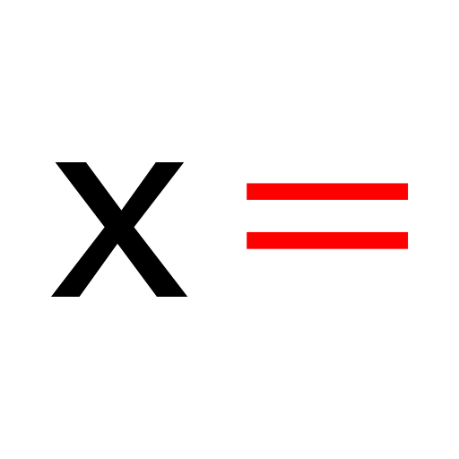

11. Lineære likningssystemer#
Læringsmål
Kunne løse lineære likningssystemer grafisk.
Kunne løse lineære likningssystemer algebraisk, både med og uten hjelpemidler.
Kunne løse lineære likningssystemer med programmering.
Et likningssystem er et system som består av to eller flere likninger med to eller flere ukjente. Målet er at alle likningene er oppfylt samtidig. Et eksempel på et slikt likningssystem er
Målet vårt er å bestemme hvilke verdier \(x\) og \(y\) må ha for at begge likningene i systemet skal være oppfylt samtidig. Vi markerer ofte likningene med (I) og (II) for å enklere kunne beskrive dem i tekst.
I likhet med likninger, så har vi flere strategier vi kan bruke for å løse disse:
Grafisk løsning
Algebraisk løsning
Løsning med programmering
Grafisk løsning#
Når vi løser et likningssystem grafisk, så tegner vi grafer som svarer til likningene i systemet og leter etter skjæringspunktet mellom dem. Løsningen av likningssystemet er koordinatene til skjæringspunktet. Men før vi ser konkret på hvordan vi gjør dette, må vi ta en liten avstikker og se på en ny måte å tenke på hvordan linjer i planet kan skrives algebraisk og hvordan vi kan tolke dem grafisk.
Grafisk tolkning av likninger#
En typisk likning i et likningssystem kan være
Grafisk tolker vi dette som alle punkter \((x, y)\) som oppfyller at \(x + y = 1\). Vi kan skrive om likningen som
Når vi så på standardformen til lineære funksjoner, så gjenkjenner vi dette som en lineær funksjon med stigningstall \(-1\) som skjærer \(y\)-aksen i punktet \((0, 1)\). Mer generelt kan vi skrive om en likning
til formen \(y = ax + b\) ved å løse likningen for \(y\). Men dette fungerer bare for skrå linjer.
Til nå har vi tenkt på lineære funksjoner som linjer på formen \(y = ax + b\) der \(y = f(x)\). Vi har også sett at vi kan skrive disse på nullpunktsform og ettpunktsform . Men linjer i planet trenger ikke alltid være lineære funksjoner. Mer generelt kan vi dele linjer inn i tre kategorier:
Skrå linjer: Linjer som kan skrives på de tre formene vi har sett på tidligere.
Horisontale linjer: Linjer som er på formen \(y = \text{konstant}\), for eksempel \(y = 3\).
Loddrette linjer: Linjer som er på formen \(x = \text{konstant}\), for eksempel \(x = -2\).
Eksempel 1
Nedenfor ser du et eksempel på hver av de tre typene linjer i planet

Fig. 11.1 viser en skrå linje som svarer til en linje med likningen \(y = -\dfrac{4}{3}x + \dfrac{2}{3}\). Men vi kan også gange denne likningen med \(3\) for å kunne skrive den som \(4x + 3y = 2\).#

Fig. 11.2 viser en horisontal linje \(y = 3\). Her har vi ikke noe \(x\)-ledd som betyr at linja har samme \(y\)-verdi uansett hvilken verdi \(x\) har. Vi kan også skrive denne linja som \(0x + 1y = 3\), men det gjør vi sjeldent.#

Fig. 11.3 viser en vertikal linje \(x = -2\). Her har vi ikke noe \(y\)-ledd som betyr at linja har samme \(x\)-verdi uansett hvilken verdi \(y\) har. Vi kan også skrive denne linja som \(1x + 0y = -2\), men det gjør vi typisk ikke.#
Eksempel 2
Nedenfor ser du grafene til to linjer som er gitt ved likningssystemet
{kind=link}
Bruk figuren til å løse likningssystemet.
Løsning
Løsningen av likningssystemet er koordinatene til skjæringspunktet mellom de to linjene. Fra figuren ser vi at skjæringspunktet er \((2, -1)\). Vi kan derfor uttrykke løsningen som
som vi bare skriver som
Vi leser den siste linja der om at “\(x = 2\) og samtidig er \(y = -1\)”.
I praksis må vi tegne grafene når vi skal løse likningssystemet grafisk. Da kan vi bruke graftegneren i Geogebra. La oss se på et eksempel:
Eksempel 3
Et likningssystem er gitt ved
Nedenfor ser du en gif som viser hvordan man løser likningen med grafvinduet i Geogebra. Vi trykker på  (Skjæring mellom to objekt) etterfulgt av å trykke på hver graf for å finne skjæringspunktet.
(Skjæring mellom to objekt) etterfulgt av å trykke på hver graf for å finne skjæringspunktet.

Skjæringspunktet mellom de to grafene er \((2, -1)\). Det betyr at løsningen av likningssystemet er
Underveisoppgave 1
Bruk graftegneren i Geogebra til å løse likningssystemet
Fasit
Løsning
Vi skriver inn likningene og bruker skjæring mellom to objekt . Se figuren nedenfor:
{kind=link}
Skjæringspunktet mellom grafene er \((4, 3)\) som betyr at løsningen av likningssystemet er
Grafisk løsning har en begrensning i at vi ikke alltid kan lese av en eksakt løsning. Selv om vi kan trykke på skjæring med Geogebra, vil vi i tilfeller hvor svarene ikke er hele tall eller rasjonale tall med endelig desimalutvikling, ikke kunne lese av løsningen eksakt. Hvis vi trenger den eksakte løsningen, må vi derfor snu oss mot neste strategi – algebraisk løsning.
Algebraisk løsning#
Algebraisk løsning av et likningssystem handler om å finne de eksakte verdiene for \(x\) og \(y\) som oppfyller likningene i systemet. For likningssystemene vi har sett på så langt, handler det om å isolere \(x\) og \(y\). Vi skal se på to strategier for å gjøre det ved regning, og til slutt skal vi se på hvordan vi gjør dette med CAS.
Innsettingsmetoden#
Innsettingsmetoden går ut på å isolere én variabel fra den ene likningen og sette inn i den andre likningen slik at vi får en likning med bare én ukjent. La oss se på et eksempel:
Eksempel 3
Løs likningssystemet
Løsning
Vi starter med å nummerere likningene for å enklere kunne beskrive hva som foregår i utregningene:
Vi løser likning \(\mathrm{(I)}\) for \(y\) fordi det er lettere å isolere \(y\) i denne likningen:
deretter setter vi inn dette uttrykket for \(y\) inn i likning \(\mathrm{(II)}\):
som gir
Til slutt setter vi inn denne verdien for \(x\) inn i likning \(\mathrm{(I)}\) som allerede er løst for \(y\):
Dermed er løsningen av likningssystemet
Underveisoppgave 2
Løs likningssystemet nedenfor med Innsettingsmetoden
Fasit
Addisjonsmetoden#
Denne strategien handler om å plusse sammen likninger eller trekke likninger fra hverandre slik at én av variablene forsvinner. Da sitter vi igjen med en likning med kun én ukjent. Deretter kan vi bare sette inn løsningen i én av likningene for å bestemme hva den andre må være. La oss ta et eksempel:
Eksempel 4
Løs likningssystemet
Løsning
La oss starte med å nummerere likningene:
Se på venstresidene i likningene. Her er \(y\)-leddene motsatte av hverandre: \(+y\) i likning \(\text{(I)}\) og \(-y\) i likning \(\text{(II)}\). Hvis vi legger sammen venstresidene, vil \(y\)-leddene derfor forsvinne. Det kan vi gjøre, så lenge vi også legger sammen høyresidene – da får vi en ny likning:
Dette kan vi forenkle til:
Nå som vi har funnet at \(x = 5\), kan vi sette inn denne verdien i én av likningene for å finne \(y\). Det spiller ingen rolle hvilken av de to likningene vi bruker. Her velger vi likning \(\text{(II)}\):
Altså er løsningen av likningssystemet
Underveisoppgave 3
Løs likningssystemet nedenfor med Addisjonsmetoden
Fasit
CAS#
Vi kan løse likningssystemer algebraisk ved hjelp av CAS og det er ganske likt som å løse en likning. Vi skriver inn likningene, markerer dem og trykker på .
Utforsk 1
I gif-en nedenfor vises det hvordan man løser et likningssystem med CAS.

Bruk CAS-vinduet til å løse det samme likningssystemet slik det er vist i gif-en ovenfor.
Bruk CAS-vinduet til å løse likningssystemet gitt ved
Bruk CAS-vinduet til å løse likningssystemet gitt ved
Løsning med programmering#
Når vi skal løse likningssystemer med programmering, lager vi en systematisk oppskrift som vi ber et program gjennomføre – vi kaller dette en algoritme. En gjenganger vi kommer til å møte på er at vi systematisk prøver ut forskjellige verdier og sjekker om svaret er riktig.
I forbindelse med likningssystemer betyr det at vi systematisk prøver ut mange forskjellige punkter \((x, y)\) og sjekker om likningssystemet er oppfylt for hvert punkt ved å sette inn verdiene i likningene. Dette krever at vi klarer å lage et grid (rutenett) med punkter slik at for hver verdi av \(x\), prøver vi ut mange verdier av \(y\). Dette skal du se mer på i Utforsk 2.
Utforsk 2
Nedenfor vises et program som lager mange forskjellige punkter \((x, y)\) i et grid og skriver ut verdiene til punktene.
Hvilken av figurene nedenfor tror du viser alle punktene som programmet skriver ut?
Kjør programmet til slutt og sjekk svaret ditt.
Klikk gjerne på figuren for å se nærmere!

Nedenfor vises et program som løser et likningssystem ved å prøve ut mange punkter \((x, y)\).
Bruk CAS-vinduet til å bestemme hva som skrives ut av programmet, og sjekk deretter svaret ditt ved å kjøre programmet.
Fyll ut programmet nedenfor slik at det løser likningssystemet